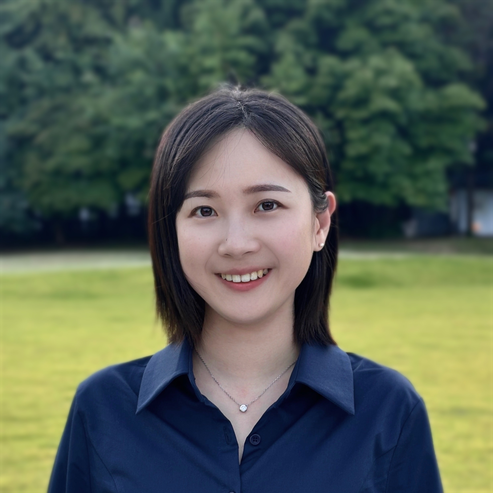

PhD researcher at the Interaction Design for Learning Lab, Ewha Womans University. I design AI-based scaffolding systems that detect and respond to learners' cognitive and affective states in real time.

About
I am a PhD student in Educational Technology at Ewha Womans University, advised by Prof. Hyo-Jeong So at the Interaction Design for Learning (IDL) Lab. My research focuses on designing AI-based scaffolding systems that detect and respond to learners' cognitive and affective states in real time — particularly in simulation-based and complex case learning environments.
With a background in Chinese Language & Literature and industry experience as an AI Product Manager at Fastcampus and a UX researcher at ByteDance, I bridge research and practice in EdTech. I also serve as a Project Researcher at the National Cancer Center's Integrated Cancer Survivorship Support Center.
I welcome collaboration on affective computing, AI in Education, simulation-based learning, and EdTech design. Feel free to reach out at eykim@ewha.ac.kr.
News
Publications & Presentations
Awards & Funding
Projects
Services
Contact